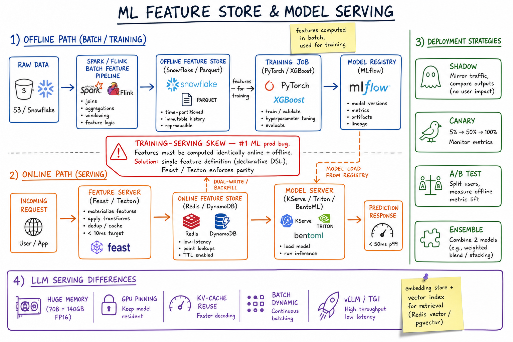

ML Serving & Feature Store // Stretch
The production stack between training and inference: a feature store unifies offline training data and online low-latency lookups; model serving (Triton, TF Serving) runs versioned graphs on GPU with A/B and canary routing. The #1 pitfall is training/serving skew — features at inference must match what the model saw in training, with point-in-time correctness.

End-to-end ML stack: batch/streaming feature pipelines write to offline warehouse and online store (Redis/Dynamo); model registry holds versioned artifacts; serving layer (Triton/TF Serving) loads models, fetches features via get_online_features, and exposes gRPC predict endpoints with A/B routing.
01 — Identity
Feature store is the shared data layer between ML training and serving. It stores feature definitions once, materialises them to an offline store (warehouse/Parquet for batch training) and an online store (Redis, DynamoDB for sub-10ms inference lookups). Model serving is the runtime that loads versioned model artifacts, assembles feature vectors, runs inference, and exposes a stable API (gRPC/REST) with routing, autoscaling, and observability.
Where in the stack: sits between raw data pipelines (Kafka, Flink/Spark, ETL) and product-facing ranking/recommendation APIs. Training jobs read historical features with point-in-time joins; serving pods read the same logical features from the online store at request time.
The contract: one feature definition, two physical stores, identical semantics. If training used user_click_count_7d computed as-of label timestamp T, serving must return the same aggregation as-of request time — not "latest value in Redis."
01a — Core Concepts
| Concept | Definition | Notes |
|---|---|---|
| Feature | Single measurable input to a model (e.g. user_age, item_ctr_24h). | Has name, dtype, owner, freshness SLA, and transformation logic. |
| Feature Group / View | Logical bundle of related features keyed by an entity (user, item, session). | Feast: FeatureView; Tecton: FeatureService. One join key per group. |
| Entity | The thing features describe (user_id, ad_id, listing_id). | Join key for online lookup and offline point-in-time join. |
| Model Version | Immutable artifact (weights + graph + feature schema) in the registry. | Tagged prod, canary, shadow. Rollback = pointer swap. |
| Serving Graph | DAG of preprocessing + model(s) executed at inference. | Triton ensemble; TF Serving preprocessing hooks; may chain multiple models. |
| Online Store | Low-latency KV for latest (or TTL-bound) feature values. | Redis Cluster, DynamoDB, Cassandra. p99 < 5–10 ms. |
| Offline Store | Historical feature snapshots for training and backfill. | Snowflake, BigQuery, S3 Parquet. Supports time-travel joins. |
| Materialization | Batch or stream job that writes computed features to online store. | Feast materialize(); Tecton continuous materialization. |
| Point-in-Time Correctness | Training labels joined to feature values as they existed at label time, not today. | Prevents label leakage. The hardest part of feature stores. |
| Training/Serving Skew | Discrepancy between features used in training vs inference. | #1 production ML bug. Different code paths, stale online values, wrong aggregations. |
01b — API / Surface (Feast / Tecton / Serving)
Online feature retrieval (Feast-style)
# Python SDK — hot path at inference
feature_vector = store.get_online_features(
features=[
"user_stats:click_count_7d",
"user_stats:avg_session_sec",
"item_stats:ctr_24h",
],
entity_rows=[{"user_id": 42, "item_id": 991}],
).to_dict()
# Returns aligned dict ready for model input tensor
Offline historical retrieval (training)
training_df = store.get_historical_features(
entity_df=labels_df, # columns: user_id, event_timestamp, label
features=["user_stats:*", "item_stats:ctr_24h"],
).to_df()
# Point-in-time join: for each row, features as-of event_timestamp
Materialization (batch push to online store)
store.materialize(
start_date=datetime(2026, 5, 22),
end_date=datetime(2026, 5, 23),
)
# Spark/Flink job computes aggregates → writes Redis/Dynamo keys
Model predict endpoint (Triton gRPC)
// inference.proto — ModelInfer RPC
message ModelInferRequest {
string model_name = "ranker_v3";
string model_version = "3"; // optional; default = latest in prod stage
repeated InferInputTensor inputs = 1;
}
// Client sends feature tensor + entity IDs;
// server may call feature store sidecar before forward pass
Non-obvious contract:get_online_featuresmust return the same schema and semantics asget_historical_featuresfor the same feature names. Serving code should never re-implement aggregations inline — that path diverges from training within weeks.
02 — When to Use / When NOT to Use
| Signal | Use feature store + dedicated serving | Skip (simpler path) |
|---|---|---|
| Model count | 5+ models sharing features; multiple teams | 1–2 models, one team, batch-only scoring |
| Latency SLO | p99 < 50 ms including feature fetch + inference | Offline batch scoring (nightly reports) |
| Feature reuse | Same user embeddings used by ranker, fraud, search | Features computed ad-hoc per model in SQL |
| Freshness | Streaming features (clicks in last 5 min matter) | Static features refreshed daily |
| Skew risk | Complex aggregations (windows, decays, joins) | Raw passthrough features from request payload |
| Compliance | Need lineage: which model saw which feature version | Research notebooks, no prod SLA |
Feast vs Tecton vs In-House
| Feast (open source) | Tecton (managed) | In-house | |
|---|---|---|---|
| Cost | Free; you operate infra | $$$ enterprise SaaS | Eng time + ongoing maintenance |
| Online stores | Redis, DynamoDB, SQLite (dev) | Managed low-latency store | Whatever you build (often Redis + Dynamo) |
| Streaming | Via Spark/Flink materialization jobs | Native continuous materialization | Custom Flink → Redis pipelines |
| Point-in-time joins | Supported in offline store | First-class, battle-tested | Hard; most teams get it wrong initially |
| Time to prod | Weeks (self-serve) | Days–weeks (vendor onboarding) | Months–quarters |
| Best for | Startups / mid-size with strong platform eng | Large ML orgs, strict SLAs, budget | Unique constraints (on-prem, exotic stores) |
Rule of thumb: start with Feast + Redis if you have ≥3 production models sharing features. Graduate to Tecton when platform team cost exceeds vendor cost. Build in-house only when Feast/Tecton cannot meet regulatory or latency constraints.
03 — Architecture
Data flows one direction for training (historical) and another for serving (latest/TTL-bound). The feature store is the semantic bridge — same names, same transforms, different physical layout and freshness guarantees.
04 — Online Feature Store
The online store answers: "Given entity IDs right now, return feature values in <10 ms." Typical backing stores:
| Store | Pattern | Latency | Trade-off |
|---|---|---|---|
| Redis Cluster | Hash per entity: HGETALL user:42 | 1–3 ms p99 | Memory cost; hot keys need sharding / local cache |
| DynamoDB | PK = entity_id, SK = feature_group | 3–8 ms p99 | Pay per RCU; no cross-key transactions |
| Cassandra | Wide rows by entity partition key | 5–15 ms | Tunable consistency; good for very wide feature sets |
Key design choices
- Key schema:
{feature_view}:{entity_id}— enables batch MGET / pipeline for multi-entity requests (cache-aside at serving layer). - Denormalize for read: store pre-joined feature groups; don't join at inference time.
- TTL on every key: stale features worse than missing features for some models; define per-feature TTL.
- Null handling: explicit default values agreed in training; serving must use same defaults.
# Redis layout example HSET user_stats:42 click_count_7d 137 avg_session_sec 842.3 _updated_at 1716422400 EXPIRE user_stats:42 86400 # 24h TTL
05 — Offline Feature Store
The offline store holds time-stamped feature snapshots for training, backtesting, and debugging skew. Usually a columnar warehouse or Parquet lake.
| Capability | Why it matters |
|---|---|
| Time-travel joins | Join label at t to features where feature_timestamp ≤ t |
| Backfill | Recompute 90 days of features after bug fix; retrain without new data collection |
| Partitioning | By event_date + entity hash; prune scans for training windows |
| Schema evolution | Add columns with defaults; version feature views; don't break old training snapshots |
-- Offline table schema (simplified) CREATE TABLE user_stats_offline ( user_id BIGINT, event_timestamp TIMESTAMP, -- when feature was valid click_count_7d INT, avg_session_sec FLOAT, _feature_version STRING ) PARTITIONED BY (ds DATE); -- Point-in-time join at training time SELECT l.*, f.click_count_7d FROM labels l ASOF JOIN user_stats_offline f ON l.user_id = f.user_id AND f.event_timestamp <= l.label_timestamp;
Batch materialization jobs (nightly Spark) backfill offline → online. Streaming jobs (Flink) update online continuously and append to offline periodically.
06 — Model Serving
| Runtime | Strengths | Typical use |
|---|---|---|
| NVIDIA Triton | Multi-framework (PyTorch, TF, ONNX, TensorRT); dynamic batching; ensemble models | GPU-heavy ranking, CV, LLM embedding servers |
| TF Serving | Native SavedModel; warm-up; versioned model dirs | TensorFlow production graphs |
| TorchServe | PyTorch-native; custom handlers | Research → prod PyTorch models |
| ONNX Runtime | Framework-agnostic; CPU-optimized | Edge, cost-sensitive CPU inference |
Deployment patterns
- A/B testing: route 5% traffic to model v4, 95% to v3; compare business metrics (CTR, revenue) not just offline AUC.
- Canary: deploy v4 to one AZ / shard; auto-promote on error-rate SLO; auto-rollback on latency regression.
- Shadow mode: v4 runs in parallel, predictions logged but not served; zero user impact, full prod traffic validation.
- GPU autoscaling: scale on queue depth / GPU util; batch requests (dynamic batching in Triton) to improve throughput 2–5×.
# Triton model config snippet — dynamic batching
dynamic_batching {
preferred_batch_size: [8, 16, 32]
max_queue_delay_microseconds: 5000
}
instance_group [{ kind: KIND_GPU, count: 2 }]
Serving pod hot path: (1) parse request IDs, (2) parallel feature fetch from online store, (3) assemble input tensor, (4) model forward, (5) post-process + log. Target: feature fetch often dominates — optimize with pipelining and local embedding cache.
07 — Training/Serving Skew & Point-in-Time Joins
Training/serving skew is when the model sees different feature distributions at inference than during training. Symptoms: offline AUC 0.92, online CTR flat or negative. Causes:
- Different code paths: Spark SQL in training, Python in serving — subtle off-by-one in window boundaries.
- Point-in-time violation: training accidentally used future data (label leakage); model learns impossible signal.
- Stale online features: materialization lag; training used fresher backfilled data.
- Missing defaults: null → 0 in training, null → drop row in serving.
- Schema drift: new categorical value unseen in training → OOV bucket mismatch.
Point-in-time join (the fix for leakage)
For each training row (entity_id, label_timestamp, label):
features = SELECT * FROM feature_snapshots
WHERE entity_id = row.entity_id
AND snapshot_time <= row.label_timestamp
ORDER BY snapshot_time DESC
LIMIT 1
Never join to "current" feature table — that includes future information.
Skew detection
- Log feature vectors at serving; compare distribution to training set (PSI, KL divergence).
- Shadow-run training pipeline logic in serving (expensive but definitive).
- Feature parity tests in CI: same input events → offline job and streaming job → assert equal output.
Interview gold: "We use one feature definition in the store; both Spark batch and Flink stream import the same transform library. Point-in-time joins in the offline store guarantee no leakage. Serving reads only from get_online_features — never recomputes."
08 — Feature Freshness & TTL
Features have a freshness SLA: how stale can a value be before inference quality degrades? Design streaming path when SLA < 15 minutes.
| Feature type | Freshness | Update path |
|---|---|---|
| User profile (age, country) | Days | Nightly batch materialization |
| 7-day click count | 1 hour | Hourly Spark + incremental merge |
| Session click count | Seconds | Flink → Kafka → Redis INCR |
| Real-time embedding | Sub-second | Two-tower model sidecar; approximate NN lookup |
// Flink streaming feature (pseudo)
stream
.keyBy(event -> event.userId)
.window(TumblingEventTimeWindows.of(Time.minutes(5)))
.aggregate(new ClickCountAgg())
.addSink(new RedisFeatureSink("user_stats:click_count_5m"));
// Online store TTL must match window semantics
redis.expire(key, 600); // 10 min — 2× window for safety
TTL strategy: set Redis TTL = 2× maximum acceptable staleness. Missing key → serving uses training-agreed default (not silent zero). Monitor _updated_at lag as a feature freshness metric in your observability stack.
09 — Model Registry & Versioning
MLflow Model Registry (or custom) is the source of truth for what runs in prod. Each registered model has stages: None → Staging → Production → Archived.
| Capability | Implementation |
|---|---|
| Version pinning | Serving loads models:/ranker/Production; alias resolves to concrete version |
| Rollback | Move Production alias back to v3; K8s rolling update or instant pointer swap |
| Shadow mode | Register v4 as Shadow; serving logs v3 (served) + v4 (shadow) predictions |
| Lineage | Link model version → training run → feature snapshot hash → git commit of transform lib |
| Approval gate | Human sign-off + automated checks (AUC delta, fairness metrics) before Production promotion |
# MLflow transition
client.transition_model_version_stage(
name="feed_ranker",
version=7,
stage="Production",
archive_existing_versions=True,
)
# Serving sidecar watches registry; hot-reloads on stage change
Store the feature schema (names, dtypes, defaults) alongside the model artifact. Serving validates incoming feature vector against schema before inference — fail fast on mismatch rather than silent wrong predictions.
10 — Where It Shows Up
| System | Feature store / serving pattern |
|---|---|
| Instagram Feed Ranking | Two-tower retrieval + ranking model; user/item embeddings in online store; Triton GPU serving; freshness-critical engagement features via streaming pipeline. |
| Ad Click Aggregator | Real-time CTR features (impressions, clicks last 1h/24h) materialized to Redis; batch training on warehouse snapshots; skew risk on windowed click counts. |
| Twitter Timeline | Hybrid fan-out + ML ranker; candidate features fetched in parallel from online store; model registry for A/B of ranking graphs; shadow mode for new ranker versions. |
Cross-links: streaming features via Flink/Spark Streaming, online KV via Redis, event backbone via Kafka, caching patterns via Caching.
11 — Interview Q&A
What is a feature store and why not just query the warehouse at inference?
Explain point-in-time correctness. Why does it matter?
feature_timestamp ≤ label_timestamp semantics in the offline store.What is training/serving skew and how do you prevent it?
get_online_features only — never re-implements logic, (4) CI parity tests on sample events, (5) monitor feature distribution drift (PSI) in prod.Online vs offline store — why two stores?
How would you serve a ranking model at 10K QPS with 50 ms p99?
Feast vs Tecton vs building in-house?
How do streaming features get into the online store?
How do you A/B test a new model safely?
What happens when a feature is missing at serving time?
How do you backfill features after discovering a bug?
Model registry vs feature store — different systems?
fv_user_stats@3. Serving validates feature vector against model's expected schema at load time. Rollback model ≠ rollback features (usually).SDE-2 vs SDE-3 differentiator on ML infra?
| SDE-2 | SDE-3 |
|---|---|
| "Feature store serves features fast; Triton runs the model" | + point-in-time join mechanics, training/serving skew root causes, Feast/Tecton trade-offs, online/offline dual-write strategy, freshness SLA → streaming vs batch decision, shadow/canary deployment, feature drift monitoring, latency budget breakdown (feature fetch vs inference), when NOT to build a feature store |